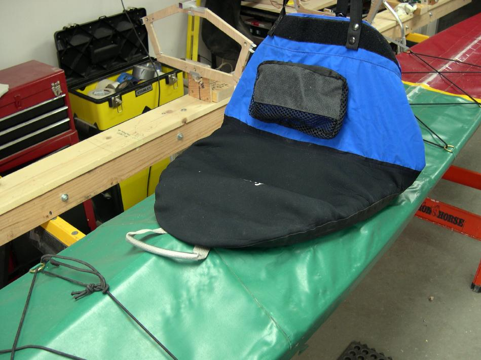

| Aluminum / Freestanding Coaming (6 of 7) | Menu Last Page Next Page |
|

The Neoprene base spray skirt fits snugly around the rigid aluminum coaming. Since the coaming rests 1.25in (32mm) above the deck, there is plenty of space for attaching both the spray skirt and a sea sock. Since the coaming is freestanding and the PVC sleeve flexible,it will depress flat on the aft deck when doing laybacks. An aft deck zipper flap and a forward deck zipper have recently been added to this Sea Rider.
|
|